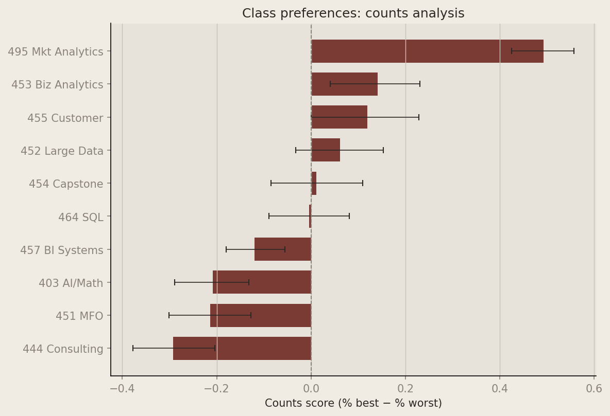
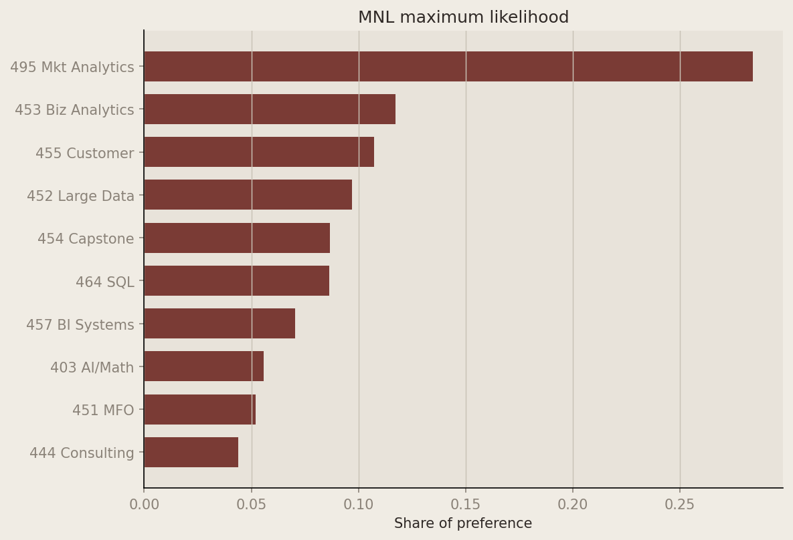
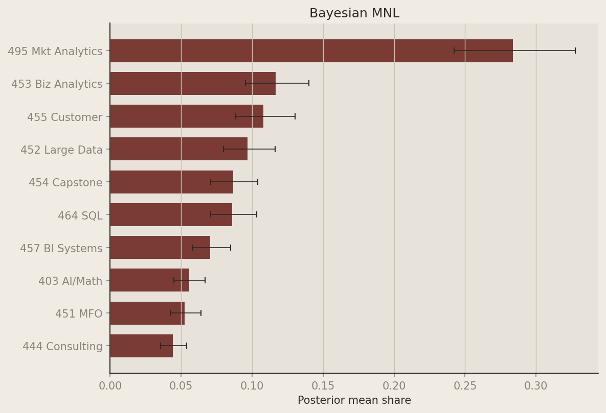
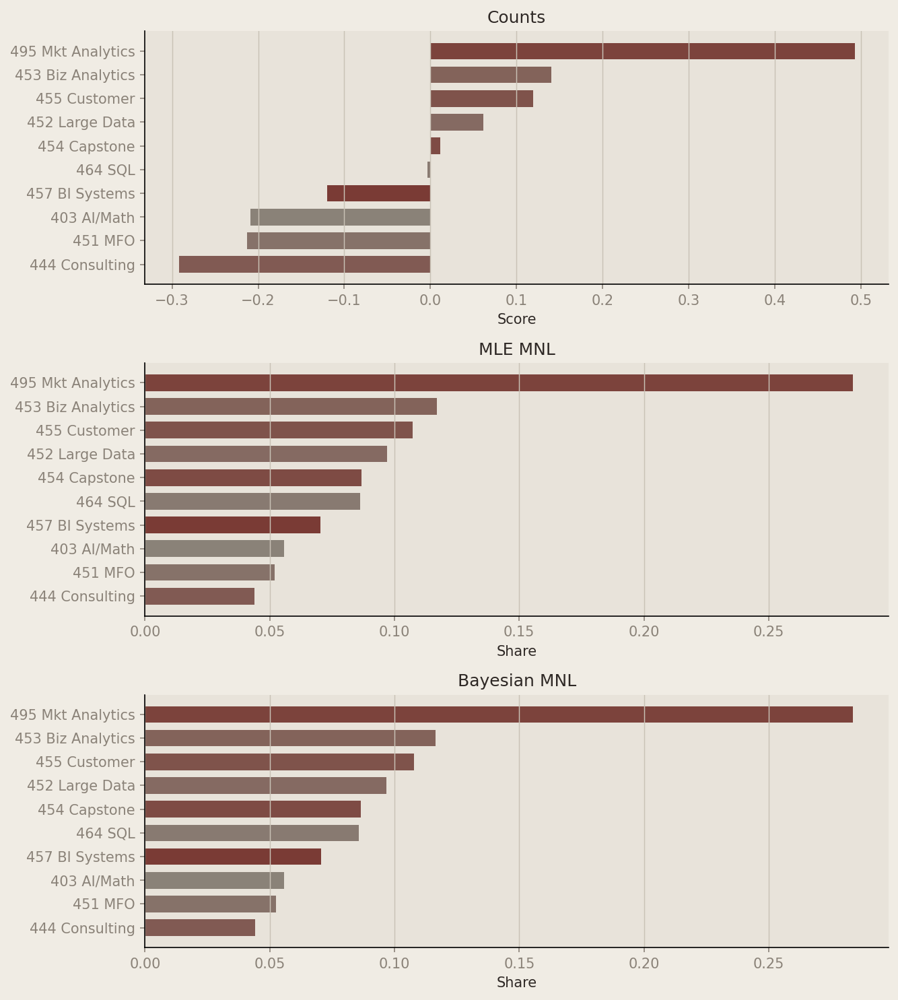

Introduction
MaxDiff (best–worst scaling) asks respondents to make trade-offs: on each screen they see a small subset of items (here, four MSBA core classes) and pick the most and least preferred. Repeating this over many screens reveals a stable ranking without asking anyone to calibrate a 1–10 scale.
That design matters because people are good at comparisons but weak at absolute ratings. MaxDiff forces differentiation and reduces scale-use bias (everyone using only the top of the scale, for example).
In this analysis the ten items are the core MSBA classes at UCSD Rady. I estimate relative preference three ways and compare them:
- A counts score — % best minus % worst when an item appears
- MNL fit by maximum likelihood — explicit choice probabilities for best and worst
- The same MNL fit Bayesianly via random-walk Metropolis–Hastings
I expect all three to agree on the broad ordering (which classes sit at the top and bottom) while differing in how sharply they separate the middle and how they report uncertainty.
The Data
Show Python code
from pathlib import Path
import matplotlib.colors as mcolors
import matplotlib.pyplot as plt
import numpy as np
import pandas as pd
from IPython.display import Markdown, display
from scipy import optimize
from scipy.special import logsumexp
from scipy.stats import norm
DATA_DIR = Path(".")
if not (DATA_DIR / "maxdiff_design_and_choices.csv").exists():
DATA_DIR = Path("blogs/HW4")
ACCENT = "#2e2825"
BG = "#f0ece4"
PANEL = "#e8e3da"
GRID = "#c9c2b6"
HIGHLIGHT = "#7a3b35"
SHORT_LAB = [
"403 AI/Math", "464 SQL", "451 MFO", "452 Large Data", "453 Biz Analytics",
"444 Consulting", "455 Customer", "454 Capstone", "495 Mkt Analytics", "457 BI Systems",
]
def markdown_table(headers: list[str], rows: list[list[str]]) -> str:
lines = [
"| " + " | ".join(headers) + " |",
"| " + " | ".join(["---"] * len(headers)) + " |",
]
lines.extend("| " + " | ".join(r) + " |" for r in rows)
return "\n".join(lines)
def style_axes(ax):
ax.set_facecolor(PANEL)
ax.figure.set_facecolor(BG)
ax.grid(True, axis="x", color=GRID, linewidth=0.7)
for spine in ("top", "right"):
ax.spines[spine].set_visible(False)
ax.tick_params(colors="#8a8278")
ax.xaxis.label.set_color(ACCENT)
ax.yaxis.label.set_color(ACCENT)
ax.title.set_color(ACCENT)
plt.rcParams.update({
"figure.facecolor": BG,
"axes.facecolor": PANEL,
"font.family": "sans-serif",
"text.color": ACCENT,
})
raw = pd.read_csv(DATA_DIR / "maxdiff_design_and_choices.csv")
raw = raw.rename(columns={"Record ID": "record_id"})
labels = pd.read_csv(DATA_DIR / "maxdiff_item_labels.csv", usecols=["Item #", "Item"])
labels = labels.rename(columns={"Item #": "item", "Item": "label"})
# Standard 4-item MaxDiff tasks (exclude placeholder item 11 on 2-item screens)
raw10 = raw.loc[raw["Item"] <= 10].copy()
task_n = raw10.groupby(["record_id", "Task"]).size().reset_index(name="n")
raw4 = raw10.merge(task_n.loc[task_n["n"] == 4], on=["record_id", "Task"])
n_resp = raw4["record_id"].nunique()
t_per = raw4.groupby("record_id")["Task"].nunique().mean()
j_per = raw4["Position"].nunique()
n_items = raw4["Item"].nunique()| Quantity | Value |
|---|---|
| Respondents (\(N\)) | 85 |
| MaxDiff tasks per respondent (\(T\)) | 8.0 (tasks 1–8) |
| Items per task (\(J\)) | 4 |
| Classes in the study | 10 |
The file maxdiff_design_and_choices.csv has one row per item slot on each task screen. After restricting to the ten MSBA classes and four-item tasks, the dimensions above apply.
The raw export lists 15 task numbers per person. Tasks 9–15 are two-item screens that include a placeholder coded as item 11 (not one of the ten classes). I analyze tasks 1–8, which follow the standard MaxDiff design with four classes per screen.
Show Python code
sanity = (
raw4.groupby(["record_id", "Task"])["Response"]
.agg(
n_best=lambda s: (s == 1).sum(),
n_worst=lambda s: (s == -1).sum(),
n_zero=lambda s: (s == 0).sum(),
)
.reset_index()
)
n_fail = (
(sanity["n_best"] != 1)
| (sanity["n_worst"] != 1)
| (sanity["n_zero"] != 2)
).sum()
print(f"Sanity-check failures: {n_fail} (expect 0)")
exposure = (
raw4.groupby("Item")
.size()
.reset_index(name="times_shown")
.merge(labels, left_on="Item", right_on="item")
)
exposure["short"] = exposure["Item"].map(lambda i: SHORT_LAB[i - 1])
display(
Markdown(
"**Exposure counts (balanced design)**\n\n"
+ markdown_table(
["Item", "Class", "Times shown"],
[
[str(int(r.Item)), r.short, str(int(r.times_shown))]
for r in exposure.sort_values("Item").itertuples()
],
)
)
)Sanity-check failures: 0 (expect 0)Exposure counts (balanced design)
| Item | Class | Times shown |
|---|---|---|
| 1 | 403 AI/Math | 273 |
| 2 | 464 SQL | 274 |
| 3 | 451 MFO | 272 |
| 4 | 452 Large Data | 276 |
| 5 | 453 Biz Analytics | 270 |
| 6 | 444 Consulting | 267 |
| 7 | 455 Customer | 276 |
| 8 | 454 Capstone | 272 |
| 9 | 495 Mkt Analytics | 274 |
| 10 | 457 BI Systems | 266 |
Every class appears roughly 267–276 times, as expected from a balanced MaxDiff design.
Counts Analysis
The counts analysis is the simplest summary: for each class \(j\), compute the share of appearances where it was picked best and worst, then take the difference
\[ \text{score}_j = \%\text{best}_j - \%\text{worst}_j. \]
Scores near \(+1\) mean “almost always best when shown”; near \(-1\) mean “almost always worst”; near \(0\) mean mixed or middle-of-the-pack.
Show Python code
counts = (
raw4.groupby("Item")
.agg(
shown=("Response", "size"),
times_best=("Response", lambda s: (s == 1).sum()),
times_worst=("Response", lambda s: (s == -1).sum()),
)
.reset_index()
)
counts["pct_best"] = counts["times_best"] / counts["shown"]
counts["pct_worst"] = counts["times_worst"] / counts["shown"]
counts["score"] = counts["pct_best"] - counts["pct_worst"]
counts = counts.merge(labels, left_on="Item", right_on="item")
counts["short"] = counts["Item"].map(lambda i: SHORT_LAB[i - 1])
counts = counts.sort_values("score", ascending=False)
display(
Markdown(
markdown_table(
[
"Item", "Class", "Shown", "Best", "Worst",
"% best", "% worst", "Score",
],
[
[
str(int(r.Item)),
r.short,
str(int(r.shown)),
str(int(r.times_best)),
str(int(r.times_worst)),
f"{100 * r.pct_best:.1f}",
f"{100 * r.pct_worst:.1f}",
f"{r.score:.3f}",
]
for r in counts.itertuples()
],
)
)
)| Item | Class | Shown | Best | Worst | % best | % worst | Score |
|---|---|---|---|---|---|---|---|
| 9 | 495 Mkt Analytics | 274 | 147 | 12 | 53.6 | 4.4 | 0.493 |
| 5 | 453 Biz Analytics | 270 | 93 | 55 | 34.4 | 20.4 | 0.141 |
| 7 | 455 Customer | 276 | 104 | 71 | 37.7 | 25.7 | 0.120 |
| 4 | 452 Large Data | 276 | 77 | 60 | 27.9 | 21.7 | 0.062 |
| 8 | 454 Capstone | 272 | 72 | 69 | 26.5 | 25.4 | 0.011 |
| 2 | 464 SQL | 274 | 55 | 56 | 20.1 | 20.4 | -0.004 |
| 10 | 457 BI Systems | 266 | 23 | 55 | 8.6 | 20.7 | -0.120 |
| 1 | 403 AI/Math | 273 | 33 | 90 | 12.1 | 33.0 | -0.209 |
| 3 | 451 MFO | 272 | 43 | 101 | 15.8 | 37.1 | -0.213 |
| 6 | 444 Consulting | 267 | 33 | 111 | 12.4 | 41.6 | -0.292 |
Show Python code
def bootstrap_counts(data: pd.DataFrame, B: int = 1000, seed: int = 495) -> pd.DataFrame:
"""Return bootstrap quantiles indexed by Item (1..10)."""
rng = np.random.default_rng(seed)
ids = data["record_id"].unique()
items = np.arange(1, 11)
mat = np.full((B, len(items)), np.nan)
for b in range(B):
samp = rng.choice(ids, size=len(ids), replace=True)
d = data[data["record_id"].isin(samp)]
sc = d.groupby("Item").agg(
shown=("Response", "size"),
best=("Response", lambda s: (s == 1).sum()),
worst=("Response", lambda s: (s == -1).sum()),
)
sc["score"] = sc["best"] / sc["shown"] - sc["worst"] / sc["shown"]
mat[b, :] = sc.reindex(items)["score"].to_numpy()
return pd.DataFrame(
{
"Item": items,
"ci_lo": np.quantile(mat, 0.025, axis=0),
"ci_hi": np.quantile(mat, 0.975, axis=0),
}
)
boot_ci = bootstrap_counts(raw4)
counts = counts.merge(boot_ci, on="Item", how="left")
order = counts.sort_values("score")
y = np.arange(len(order))
x = order["score"].to_numpy()
lo = np.maximum(0, x - order["ci_lo"].to_numpy())
hi = np.maximum(0, order["ci_hi"].to_numpy() - x)
fig, ax = plt.subplots(figsize=(8, 5.5))
ax.barh(y, x, color=HIGHLIGHT, height=0.7)
ax.errorbar(
x,
y,
xerr=np.vstack([lo, hi]),
fmt="none",
ecolor=ACCENT,
capsize=3,
linewidth=0.8,
)
ax.axvline(0, color="#8a8278", linestyle="--", linewidth=0.9)
ax.set_yticks(y, labels=order["short"])
ax.set_xlabel("Counts score (% best − % worst)")
ax.set_title("Class preferences: counts analysis")
style_axes(ax)
plt.tight_layout()
plt.show()
MGTA 495 Marketing Analytics dominates: picked best on 54% of appearances and worst on only 4%, for a counts score of 0.49. 453 Business Analytics and 455 Customer Analytics follow. At the bottom, 444 Analytics Consulting is chosen worst 42% of the time when shown. 464 SQL sits near zero — students split almost evenly on best vs. worst — which is exactly the kind of middle item where rankings can shuffle across methods.
From MaxDiff Data to MNL Choices
Each MaxDiff task becomes two multinomial logit observations:
- Best choice from all \(J=4\) items on the screen, with utility \(\beta_j\) and probability
\(P(\text{best}=b) = \exp(\beta_b) / \sum_{j \in \text{shown}} \exp(\beta_j)\). - Worst choice from the three remaining items, with utilities negated:
\(P(\text{worst}=c \mid \text{best}=b) = \exp(-\beta_c) / \sum_{j \neq b} \exp(-\beta_j)\).
Identifiability: the softmax is unchanged if we add a constant to every \(\beta_j\), so only \(J-1 = 9\) coefficients are identified. I set \(\beta_1 = 0\) (MGTA 403 as reference) and estimate \(\beta_2,\ldots,\beta_{10}\).
Show Python code
def build_tasks(df: pd.DataFrame) -> list[dict]:
rows = []
for _, g in df.groupby(["record_id", "Task"]):
rows.append(
{
"items": g["Item"].astype(int).tolist(),
"best": int(g.loc[g["Response"] == 1, "Item"].iloc[0]),
"worst": int(g.loc[g["Response"] == -1, "Item"].iloc[0]),
}
)
return rows
tasks = build_tasks(raw4)
print(f"MNL choice rows: {2 * len(tasks)} (2 per task)")
def prepare_task_arrays(task_rows: list[dict]) -> tuple[np.ndarray, np.ndarray, np.ndarray, np.ndarray]:
"""Precompute 0-based indices so each likelihood call avoids Python dict work."""
n = len(task_rows)
items = np.zeros((n, 4), dtype=np.int32)
best = np.zeros(n, dtype=np.int32)
worst = np.zeros(n, dtype=np.int32)
rem = np.zeros((n, 3), dtype=np.int32)
for i, row in enumerate(task_rows):
it = np.asarray(row["items"], dtype=np.int32) - 1
jb = row["best"] - 1
items[i] = it
best[i] = jb
worst[i] = row["worst"] - 1
rem[i] = it[it != jb]
return items, best, worst, rem
TASK_ITEMS, TASK_BEST, TASK_WORST, TASK_REM = prepare_task_arrays(tasks)
pd.DataFrame(tasks).head()MNL choice rows: 1360 (2 per task)| items | best | worst | |
|---|---|---|---|
| 0 | [5, 7, 4, 1] | 7 | 1 |
| 1 | [8, 3, 10, 9] | 10 | 8 |
| 2 | [3, 5, 2, 6] | 2 | 6 |
| 3 | [6, 4, 8, 7] | 7 | 6 |
| 4 | [2, 9, 7, 1] | 2 | 1 |
MNL via Maximum Likelihood
Summing over all tasks, the log-likelihood is
\[ \ell(\boldsymbol{\beta}) = \sum_{\text{tasks}} \Big[ \beta_{j^*_b} - \log \sum_{j \in \text{shown}} e^{\beta_j} - \beta_{j^*_w} - \log \sum_{j \in \text{shown}\setminus\{j^*_b\}} e^{-\beta_j} \Big]. \]
I implement this with logsumexp for numerical stability and maximize with scipy.optimize.minimize (BFGS, with the Hessian inverse for standard errors).
Show Python code
def beta_full(b9: np.ndarray) -> np.ndarray:
return np.concatenate([[0.0], np.asarray(b9, dtype=float)])
def log_likelihood(b9: np.ndarray) -> float:
"""Vectorized over all tasks (same math as the loop version)."""
b = beta_full(b9)
vb = b[TASK_ITEMS]
best_part = b[TASK_BEST] - logsumexp(vb, axis=1)
vw = -b[TASK_REM]
worst_part = -b[TASK_WORST] - logsumexp(vw, axis=1)
return (best_part + worst_part).sum()
mle_res = optimize.minimize(
lambda x: -log_likelihood(x),
np.zeros(9),
method="BFGS",
)
b_hat = beta_full(mle_res.x)
se_free = np.sqrt(np.diag(mle_res.hess_inv))
se_full = np.concatenate([[0.0], se_free])
shares = np.exp(b_hat) / np.exp(b_hat).sum()
mle_tbl = pd.DataFrame({
"Item": np.arange(1, 11),
"beta": b_hat,
"se": se_full,
"share": shares,
})
mle_tbl = mle_tbl.merge(labels, left_on="Item", right_on="item")
mle_tbl["short"] = mle_tbl["Item"].map(lambda i: SHORT_LAB[i - 1])
mle_tbl = mle_tbl.sort_values("share", ascending=False)
display(
Markdown(
markdown_table(
["Item", "Class", "β̂", "SE", "Share"],
[
[
str(int(r.Item)),
r.short,
f"{r.beta:.3f}",
f"{r.se:.3f}",
f"{r.share:.3f}",
]
for r in mle_tbl.itertuples()
],
)
)
)| Item | Class | β̂ | SE | Share |
|---|---|---|---|---|
| 9 | 495 Mkt Analytics | 1.630 | 0.115 | 0.284 |
| 5 | 453 Biz Analytics | 0.744 | 0.130 | 0.117 |
| 7 | 455 Customer | 0.656 | 0.120 | 0.107 |
| 4 | 452 Large Data | 0.555 | 0.115 | 0.097 |
| 8 | 454 Capstone | 0.443 | 0.116 | 0.087 |
| 2 | 464 SQL | 0.438 | 0.109 | 0.086 |
| 10 | 457 BI Systems | 0.236 | 0.116 | 0.070 |
| 1 | 403 AI/Math | 0.000 | 0.000 | 0.056 |
| 3 | 451 MFO | -0.067 | 0.115 | 0.052 |
| 6 | 444 Consulting | -0.239 | 0.126 | 0.044 |
Show Python code
order = mle_tbl.sort_values("share")
fig, ax = plt.subplots(figsize=(8, 5.5))
ax.barh(order["short"], order["share"], color=HIGHLIGHT, height=0.7)
ax.set_xlabel("Share of preference")
ax.set_title("MNL maximum likelihood")
style_axes(ax)
plt.tight_layout()
plt.show()
The MLE ranking matches the counts ranking for all ten classes in this sample. That agreement is strongest at the top (495 share ≈ 0.28) and bottom (444 ≈ 0.04). The MNL still adds value: it uses every “not chosen” on each screen, not only the best/worst counts, and delivers standard errors for inference.
MNL via Bayesian Estimation
The posterior is \(\pi(\boldsymbol{\beta} \mid \mathbf{y}) \propto L(\boldsymbol{\beta})\,\pi(\boldsymbol{\beta})\) with a weakly informative prior \(\boldsymbol{\beta} \sim N(\mathbf{0}, 10\mathbf{I})\) on the nine free parameters.
Show Python code
def log_posterior(b9: np.ndarray) -> float:
return log_likelihood(b9) + norm.logpdf(b9, loc=0, scale=np.sqrt(10)).sum()
def metropolis_hastings(
beta0: np.ndarray,
n_iter: int,
step: float,
seed: int = 495,
label: str = "MCMC",
progress_every: int = 2_000,
) -> tuple[np.ndarray, float]:
rng = np.random.default_rng(seed)
k = len(beta0)
draws = np.empty((n_iter, k))
beta = beta0.copy()
lp = log_posterior(beta)
accept = 0
print(f"{label}: starting {n_iter:,} iterations...", flush=True)
for t in range(n_iter):
beta_star = beta + rng.normal(0, step, size=k)
lp_star = log_posterior(beta_star)
if np.log(rng.random()) < lp_star - lp:
beta = beta_star
lp = lp_star
accept += 1
draws[t] = beta
if progress_every and (t + 1) % progress_every == 0:
print(
f"{label}: {t + 1:,} / {n_iter:,} — acceptance so far {accept / (t + 1):.3f}",
flush=True,
)
return draws, accept / n_iter
# Tune step size toward 25–40% acceptance
step = 0.12
for trial_i in range(6):
trial_draws, trial_acc = metropolis_hastings(
mle_res.x, 3000, step, seed=495 + trial_i, label=f"Tuning trial {trial_i + 1}"
)
print(f"step = {step:.3f}, acceptance = {trial_acc:.3f}", flush=True)
if 0.25 <= trial_acc <= 0.40:
break
step = step / 2 if trial_acc < 0.25 else step * 1.15
mh_draws, accept_rate = metropolis_hastings(
mle_res.x, n_iter=20_000, step=step, seed=495, label="Main chain"
)
print(f"Final acceptance rate: {accept_rate:.3f}", flush=True)
burn = mh_draws.shape[0] // 4
post_draws = mh_draws[burn:]
beta_mean = beta_full(post_draws.mean(axis=0))
beta_ci = np.quantile(post_draws, [0.025, 0.975], axis=0)
b_post = np.column_stack([np.zeros(post_draws.shape[0]), post_draws])
b_post -= b_post.max(axis=1, keepdims=True)
exp_b = np.exp(b_post)
share_draws = exp_b / exp_b.sum(axis=1, keepdims=True)
share_mean = share_draws.mean(axis=0)
share_ci = np.quantile(share_draws, [0.025, 0.975], axis=0)
bayes_tbl = pd.DataFrame({
"Item": np.arange(1, 11),
"beta_mean": beta_mean,
"beta_lo": np.concatenate([[0.0], beta_ci[0]]),
"beta_hi": np.concatenate([[0.0], beta_ci[1]]),
"share_mean": share_mean,
"share_lo": share_ci[0],
"share_hi": share_ci[1],
})
bayes_tbl = bayes_tbl.merge(labels, left_on="Item", right_on="item")
bayes_tbl["short"] = bayes_tbl["Item"].map(lambda i: SHORT_LAB[i - 1])
bayes_tbl = bayes_tbl.sort_values("share_mean", ascending=False)
display(
Markdown(
markdown_table(
["Item", "Class", "β mean", "β 95% CI", "Share mean"],
[
[
str(int(r.Item)),
r.short,
f"{r.beta_mean:.3f}",
f"[{r.beta_lo:.2f}, {r.beta_hi:.2f}]",
f"{r.share_mean:.3f}",
]
for r in bayes_tbl.itertuples()
],
)
)
)Tuning trial 1: starting 3,000 iterations...
Tuning trial 1: 2,000 / 3,000 — acceptance so far 0.126
step = 0.120, acceptance = 0.127
Tuning trial 2: starting 3,000 iterations...
Tuning trial 2: 2,000 / 3,000 — acceptance so far 0.419
step = 0.060, acceptance = 0.409
Tuning trial 3: starting 3,000 iterations...
Tuning trial 3: 2,000 / 3,000 — acceptance so far 0.368
step = 0.069, acceptance = 0.364
Main chain: starting 20,000 iterations...
Main chain: 2,000 / 20,000 — acceptance so far 0.349
Main chain: 4,000 / 20,000 — acceptance so far 0.363
Main chain: 6,000 / 20,000 — acceptance so far 0.361
Main chain: 8,000 / 20,000 — acceptance so far 0.363
Main chain: 10,000 / 20,000 — acceptance so far 0.359
Main chain: 12,000 / 20,000 — acceptance so far 0.360
Main chain: 14,000 / 20,000 — acceptance so far 0.356
Main chain: 16,000 / 20,000 — acceptance so far 0.357
Main chain: 18,000 / 20,000 — acceptance so far 0.360
Main chain: 20,000 / 20,000 — acceptance so far 0.359
Final acceptance rate: 0.359| Item | Class | β mean | β 95% CI | Share mean |
|---|---|---|---|---|
| 9 | 495 Mkt Analytics | 1.630 | [1.37, 1.89] | 0.284 |
| 5 | 453 Biz Analytics | 0.738 | [0.47, 1.03] | 0.117 |
| 7 | 455 Customer | 0.661 | [0.38, 0.96] | 0.108 |
| 4 | 452 Large Data | 0.552 | [0.26, 0.83] | 0.097 |
| 8 | 454 Capstone | 0.441 | [0.16, 0.73] | 0.087 |
| 2 | 464 SQL | 0.432 | [0.17, 0.71] | 0.086 |
| 10 | 457 BI Systems | 0.236 | [-0.02, 0.51] | 0.071 |
| 1 | 403 AI/Math | 0.000 | [0.00, 0.00] | 0.056 |
| 3 | 451 MFO | -0.061 | [-0.33, 0.24] | 0.052 |
| 6 | 444 Consulting | -0.235 | [-0.50, 0.06] | 0.044 |
Show Python code
trace_specs = [
(8, "β₉ (495 Mkt Analytics)"),
(4, "β₅ (453 Biz Analytics)"),
(5, "β₆ (444 Consulting)"),
]
fig, axes = plt.subplots(3, 1, figsize=(8, 6), sharex=True)
colors = [HIGHLIGHT, "#8a8278", ACCENT]
for ax, (col, title), color in zip(axes, trace_specs, colors):
ax.plot(post_draws[:, col], color=color, linewidth=0.35, alpha=0.85)
ax.set_ylabel("β")
ax.set_title(title, fontsize=10)
style_axes(ax)
axes[-1].set_xlabel("Iteration (after burn-in)")
fig.suptitle("MCMC traces", fontsize=12, y=1.01)
plt.tight_layout()
plt.show()
Show Python code
order_b = bayes_tbl.sort_values("share_mean")
y = np.arange(len(order_b))
fig, ax = plt.subplots(figsize=(8, 5.5))
ax.barh(y, order_b["share_mean"], color=HIGHLIGHT, height=0.7)
ax.errorbar(
order_b["share_mean"],
y,
xerr=[
order_b["share_mean"] - order_b["share_lo"],
order_b["share_hi"] - order_b["share_mean"],
],
fmt="none",
ecolor=ACCENT,
capsize=3,
linewidth=0.8,
)
ax.set_yticks(y, labels=order_b["short"])
ax.set_xlabel("Posterior mean share")
ax.set_title("Bayesian MNL")
style_axes(ax)
plt.tight_layout()
plt.show()
Posterior means are very close to the MLE (e.g. \(\hat\beta_9 \approx 1.63\) under both). Posterior SDs on free parameters align with MLE standard errors. The Bayesian route shines for shares: credible intervals come from pushing every MCMC draw through the softmax — no delta method required.
Comparing the Three Methods
Show Python code
cmp = counts[["Item", "short", "score"]].rename(columns={"score": "counts_score"})
cmp = cmp.merge(mle_tbl[["Item", "share"]].rename(columns={"share": "mle_share"}), on="Item")
cmp = cmp.merge(
bayes_tbl[["Item", "share_mean"]].rename(columns={"share_mean": "bayes_share"}),
on="Item",
)
cmp["counts_rank"] = cmp["counts_score"].rank(ascending=False, method="min").astype(int)
cmp["mle_rank"] = cmp["mle_share"].rank(ascending=False, method="min").astype(int)
cmp["bayes_rank"] = cmp["bayes_share"].rank(ascending=False, method="min").astype(int)
cmp = cmp.sort_values("mle_rank")
display(
Markdown(
markdown_table(
[
"Item", "Class", "Counts score", "Rank",
"MLE share", "Rank", "Bayes share", "Rank",
],
[
[
str(int(r.Item)),
r.short,
f"{r.counts_score:.3f}",
str(int(r.counts_rank)),
f"{r.mle_share:.3f}",
str(int(r.mle_rank)),
f"{r.bayes_share:.3f}",
str(int(r.bayes_rank)),
]
for r in cmp.itertuples()
],
)
)
)| Item | Class | Counts score | Rank | MLE share | Rank | Bayes share | Rank |
|---|---|---|---|---|---|---|---|
| 9 | 495 Mkt Analytics | 0.493 | 1 | 0.284 | 1 | 0.284 | 1 |
| 5 | 453 Biz Analytics | 0.141 | 2 | 0.117 | 2 | 0.117 | 2 |
| 7 | 455 Customer | 0.120 | 3 | 0.107 | 3 | 0.108 | 3 |
| 4 | 452 Large Data | 0.062 | 4 | 0.097 | 4 | 0.097 | 4 |
| 8 | 454 Capstone | 0.011 | 5 | 0.087 | 5 | 0.087 | 5 |
| 2 | 464 SQL | -0.004 | 6 | 0.086 | 6 | 0.086 | 6 |
| 10 | 457 BI Systems | -0.120 | 7 | 0.070 | 7 | 0.071 | 7 |
| 1 | 403 AI/Math | -0.209 | 8 | 0.056 | 8 | 0.056 | 8 |
| 3 | 451 MFO | -0.213 | 9 | 0.052 | 9 | 0.052 | 9 |
| 6 | 444 Consulting | -0.292 | 10 | 0.044 | 10 | 0.044 | 10 |
Show Python code
item_cmap = mcolors.LinearSegmentedColormap.from_list("items", ["#8a8278", "#7a3b35"])
item_colors = item_cmap(np.linspace(0, 1, 10))
panels = [
(counts.sort_values("score"), "score", "Counts", "Score"),
(mle_tbl.sort_values("share"), "share", "MLE MNL", "Share"),
(bayes_tbl.sort_values("share_mean"), "share_mean", "Bayesian MNL", "Share"),
]
fig, axes = plt.subplots(3, 1, figsize=(9, 10))
for ax, (dat, col, title, xlab) in zip(axes, panels):
dat = dat.sort_values(col)
colors = [item_colors[int(i) - 1] for i in dat["Item"]]
ax.barh(dat["short"], dat[col], color=colors, height=0.7)
ax.set_xlabel(xlab)
ax.set_title(title)
style_axes(ax)
plt.tight_layout()
plt.show()
All three methods agree on the headline story: 495 Marketing Analytics is the clear favorite; 444 Consulting and 451 MFO are least liked. Disagreements are minor here — mostly in the compressed middle (SQL vs. Capstone vs. BI Systems), where scores are close and sampling noise can swap ranks by one place.
- Counts are fast and transparent for dashboards.
- MLE MNL gives a principled generative model and classical SEs for \(\beta\).
- Bayesian MNL delivers credible intervals on functions of \(\beta\) (shares, counterfactual menus) and extends naturally to hierarchical individual-level models.
Discussion
Substantive takeaway: MSBA students in this sample most want Marketing Analytics (495) and quantitative application courses (453, 455, 452). Analytics Consulting (444) and the summer 451 MFO block sit at the bottom — plausibly reflecting workload, timing, or less perceived fit with analytics career goals. The strength of 495 is not surprising in a Marketing Analytics cohort, but the size of the gap (roughly 28% MNL share vs. 4% for consulting) is still striking.
Methods: use counts for a quick read, MLE when you need a single published estimate with standard errors, and Bayes when uncertainty on market shares or “what if we added a class?” matters.
Caveats: respondents are a self-selected MSBA sample; preferences need not generalize to other programs. Order effects, prior coursework, and cohort timing (who has already taken which class) were not modeled. Tasks 9–15 in the export use a different screen format and were set aside so the MNL matches the standard four-item MaxDiff theory from class.
Next steps: fit a hierarchical MNL with random coefficients by respondent to see heterogeneity; merge covariates (concentration, work experience); and model the two-item follow-up tasks if the survey documentation defines how item 11 should enter the likelihood.